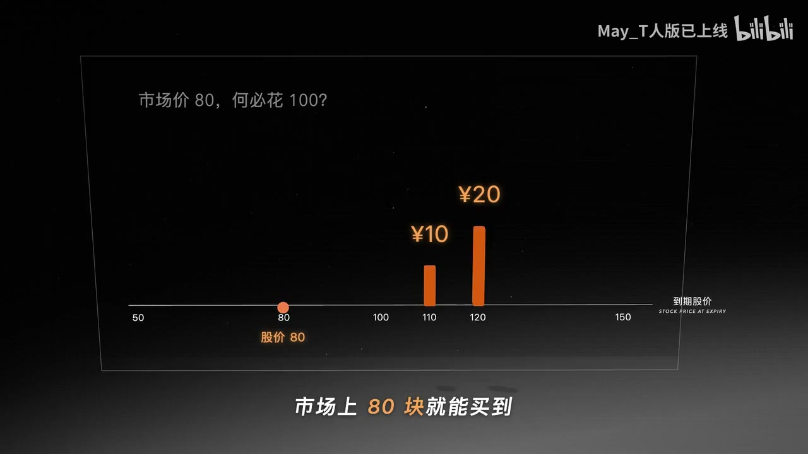

原视频 · 在线回看
点击后联网加载 B 站播放器；本地不下载整段视频。

原视频 · 在线回看
点击后联网加载 B 站播放器；本地不下载整段视频。
来源：期权是什么？和股票的区别？一次讲懂期权入门
UP 主：May_T人版已上线
时长：8 分 33 秒
链接：https://www.bilibili.com/video/BV1AjH96mEoo/
阅读强度：standard
一张看涨期权可以让买方在约定时间内按固定价格买入股票。假设股票现在值100元，有一张期权允许我们一个月后仍按100元买入，购买期权要先付5元。一个月后股价若涨到120元，行权后每股多出20元；如果股价跌到80元，我们可以放弃行权，期权到期价值为零。关键问题是：这张权利今天应该值多少钱？
期权合约至少要看四项：标的是什么、行权价是多少、到期日是哪天，以及买方支付多少权利金。这里的标的是股票，行权价为100元，到期时间是一个月，权利金为5元。买方获得选择权，到期时可以决定是否行权；卖方收取权利金，同时承担按合约配合履约的义务。
这是一张看涨期权（call）。到期时，股价高于100元，我们可以按100元买入；股价低于100元，直接在市场买更便宜，期权就可以放弃。因而看涨期权的到期价值写作
其中， 是到期股价， 是行权价。这个数还没有扣掉购买期权时支付的权利金。例子里，股价到120元时，到期价值是20元，扣除5元权利金后净赚15元；到110元时，到期价值10元，净赚5元；到100元或更低时，期权到期价值为零，损失最多是先付的5元。忽略费用时，看涨期权的盈亏平衡价是105元。
买方收益与损失的形状因此不对称：买入看涨期权的最大损失是权利金，股价继续上涨时，到期收益还会继续增加。杠杆来自用较少权利金获得对标的价格变化的敞口。视频用100元作比较：买一股股票，股价由100涨到120，盈利20元；若用100元买20张每张5元的期权，期权到期时每张值20元，合计400元，扣除100元成本后盈利300元。若股价只跌到95元，这些看涨期权到期价值为零，100元成本全部损失。这个演算把每张期权视作对应一个单位的股票，重点展示杠杆如何放大结果；实际合约单位、手续费和交易规则要以合约说明为准。
看跌期权（put）给买方在约定时间内按行权价卖出的权利。若行权价为100元，到期股价跌到70元，合约到期价值为30元；买方付过的权利金仍要从中扣除。持有股票的人可以把看跌期权当成一种价格保护安排来理解：股价下跌时，卖出权利的价值可能上升。不过保护有成本，也有期限；若期权到期时没有触及有利区间，买方可能损失全部权利金。
只按“上涨概率乘收益”来估算期权价格，会因每个人对涨跌概率的判断不同而得到不同答案。视频先把市场压缩成一个小模型：一个月后股价只可能到120元或80元。行权价为100元的看涨期权，在这两种结局下分别值20元和0元。此时可以用股票和借款搭出一个到期结果相同的组合。
组合持有半股股票，并借入40元。若股价到120元，半股值60元，偿还40元后剩20元；若股价到80元，半股值40元，偿还40元后剩0元。两种结果都与期权相同。今天买半股要花50元，减去借来的40元，组合净成本为10元。若期权与这个组合在到期时的结果完全一致，在这个简化且可无成本交易的模型里，两者今天应有相同价格；否则可以卖出高估的一边、买入低估的一边，构造套利。于是模型给出的期权价格是10元，开头的5元报价在这组假设下偏低。
这里的“复制”是定价的核心：找到一组股票和现金头寸，使它们在每种可能结局下的价值与期权一致，再用复制组合的成本推回期权价格。例子没有计入利息、交易成本、买卖限制，也只设了两个到期股价，因此10元是教学模型的答案，不能直接当成现实市场报价。
半股的比例来自两个结果之间的变化量：期权价值从0变到20元，股票从80元变到120元，比例为。这个比例叫 Delta，在这个离散例子中表示复制组合持有多少股。把股价的两种结局改成140元和60元，期权到期价值变为40元和0元，复制比例仍是0.5；但借款降为30元，组合成本变为50减30，即20元。波动范围扩大后，看涨期权价格从10元升到20元：买方仍可以放弃不利的结果，却保留了更大的上涨空间。
真实股价会有许多可能路径。把到期前的时间切成更多小步，在每一步都调整股票与现金的复制组合，就能逐步逼近连续变化的股价模型。Black–Scholes 公式沿着这条思路，把剩余时间、股价和波动等因素放进期权定价框架。视频用这条推导线连接基础复制组合与公式；两状态算例本身并没有覆盖真实市场的全部假设与风险。
期权价格也会随着不同变量改变。Delta表示期权价格对标的股价变化的敏感程度；Gamma表示Delta如何随股价变化；Theta描述时间流逝对期权价格的影响；Vega描述隐含波动变化带来的价格敏感度。对买入期权来说，时间流逝通常会消耗时间价值；波动预期上升通常会提高期权价格，但实际变化还受合约类型、剩余期限、利率和其他条件影响。这些希腊字母帮助我们拆解价格变化来源，不能把单个指标当成完整的投资判断。
期权买方付出权利金，换取在期限内按行权价买入或卖出的选择权。看涨期权的到期价值是，看跌期权则随股价低于行权价的幅度增加。购买期权时要把权利金计入净盈亏；杠杆能放大利润，也可能让权利金全部损失。
定价示例的关键步骤是复制：用股票和现金拼出与期权相同的到期结果，再以组合成本作为模型价格。示例中的结果依赖只有两种股价、可借款、无交易成本等简化设定。真实期权报价还需结合合约条款和市场变量理解。